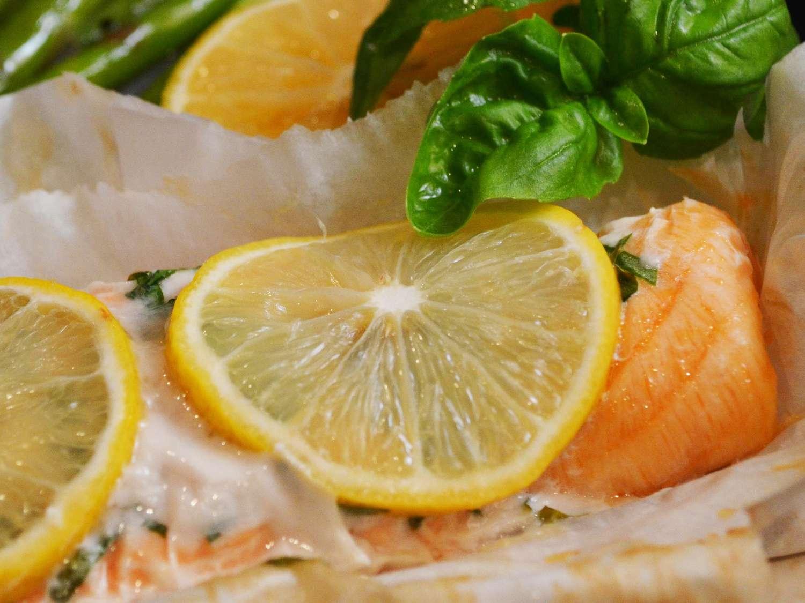

Parchment Baked Salmon

Description
Bake your salmon in parchment, which allows the salmon to steam, ensuring deliciously moist fish.
Ingredients
- Salmon Fillet
- Chopped Basil Leaves
- Lemon Slices
- Olive Oil Cooking Spray
- Salt and Pepper
Steps
- Preheat oven to 200 degrees C.
- Place salmon fillet skin side down in the middle of large parchment paper.
- Season the salmon with salt and pepper.
- Cut slits into the fillet and stuff the basil leaves into the silts.
- Spray fillet with cooking spray and arrange lemon slices on top.
- Fold the edges of parchment paper over fillet to seal it into an airtight packet
- Place sealed packed onto a baking sheet and bake in preheated oven for 25 minutes
- To serve, cut open the parchment paper and dig in